{kind=link}
 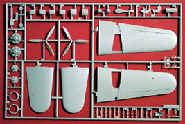
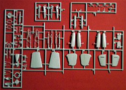
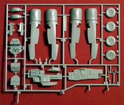
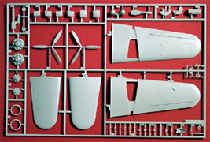
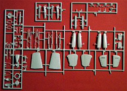
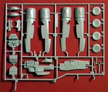
{kind=link}
{kind=link}
{kind=link}
You can click on the above images to view larger pictures
Pro Modeler 1/48 Dornier Do-217 E-5
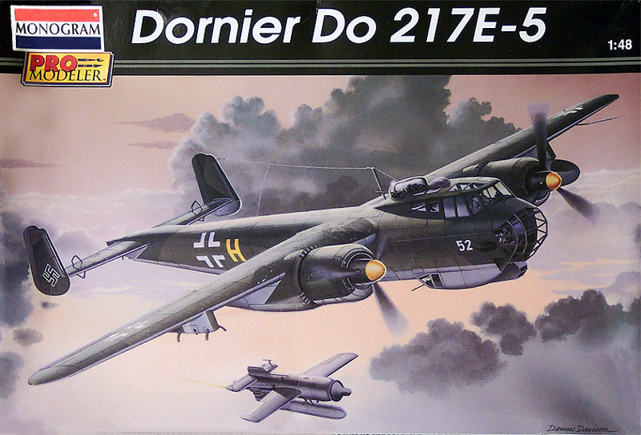
Kit #5954 MSRP $36.98
Images and text Copyright © 2004 by Matt Swan
Developmental Background
This is the third review of a Dornier Do-217 derivative kit now and I am not going to rehash the entire history of the aircrafts development here. You can read more on the overall development in my review of the MPM Vacuform Do-217 N-1/J and addition information is available in my review of the Koster Aero Enterprises Do-217 K-2/M-11 conversion kit. I will talk a little about this particular version of the 217 though.
Several pre-production test bed aircraft were built under the “A”, “B” and “C” designations before the actual “E” production model started coming off the assembly lines. Even this version went through several rapid developmental changes before Dornier settled on the E-5 version. The Do 217 E-5s were modified from late production Do 217 E-4s to carry the Henschel Hs 293A standoff missile. This was one of the earliest examples of a "smart" or guided weapon, and it was designed for use in the anti-shipping role. It allowed the aircraft to attack a ship while remaining beyond the range of the vessel's anti-aircraft guns. It exchanged part of its bomb load for additional fuel tanks, while the crew enjoyed better protection through new armor.
The Do 217 E-5 featured a dorsal turret with a 13 mm MG 131 machine gun, a similar gun mounted ventrally, three 7.92 mm MG 15 in the forward fuselage, and a 15 mm MG 151 cannon in the nose. The E-5 was fitted with BMW 801C engines, which had been first introduced on the E-4. An ETC 2000/XII carrier was fitted under each wing, and although two missiles could be carried, only one was normally loaded for operational missions. An external fuel tank was usually installed under the other wing. Using command guidance, the missile was controlled by the bombardier who operated a Knuppel joystick controller as he visually observed the weapon while it flew to its target. A Telefunken FuG 203b Kehl III transmitter was fitted in the aircraft, and it was linked to a FuG 230b Strassburg receiver inside the missile. A heating system was added inside the aircraft's wings to keep the temperature inside the missile within operating limits. A total of 65 Do-217 E-5 aircraft were manufactured during the war years.
The Kit
The masters for this kit were done by Bill Koster and the kit is a gem, with fine, recessed surface detail, a well detailed cockpit, and excellent fit throughout, except around the engine nacelle to wing area. The parts breakdown is fairly conventional except for the fuselage, which consists of a left and right fuselages piece, which comprises the sides and bottom of the fuselage and a fuselage top, which also contains the top, upper third of the wings and the upper horizontal stabilizers. The cockpit features some very nicely detailed sidewalls, beautiful radio operator/gunners station and a very nice throttle quadrant. Several levers are provided in plastic that would probably have been better as photo etched pieces. One deficiency in the front office is a total lack of seatbelts. The engines are an interesting piece of engineering, the primary nacelle comes as a left and right half with openings for exhaust manifolds to be inserted and have external flame dampeners as seperate pieces. The engines are half faces and are mostly hidden by some heavy cooling fans. The fans are not that great with a large mold separation seam being very evident across all the blades.
For underwing stores the kit includes a nicely detailed Henschel missile and a long range drop tank for the opposite hard point. The single sprue of clear parts covers the main canopy as well as side window gun placements and a crystal clear top turret dome. Included on the parts trees are several ammo cans for the various gun stations to help dress up the interior. The insides of the landing gear bays are adequately detailed and include front and rear bulkheads. The gear assemblies themselves look pretty good but could stand to have some brake lines added. Overall there are 138 pieces molded in medium gray polystyrene and seven clear parts for a box total of 145 pieces.
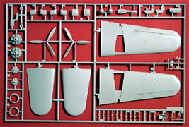
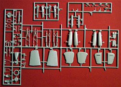
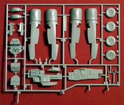
You can click on the above images to view larger pictures
Decals and Instructions
The instruction packet is more of a book than simple sheets. This is a sixteen-page booklet stabled at the binding. The front cover gives a nice historical background of the aircraft. The next page contains an extensive paint code chart giving RLM numbers and Federal Standard codes. This is followed by thirty-three exploded views broken down into nine assembly steps. These contain plenty of painting instructions and assembly tips. The last two pages cover decal placement and exterior color schemes for two different aircraft; one in a standard splinter scheme and one in a splinter scheme with a squiggle pattern overlay. Pro Modeler has done an excellent job with the instruction booklet on this kit.
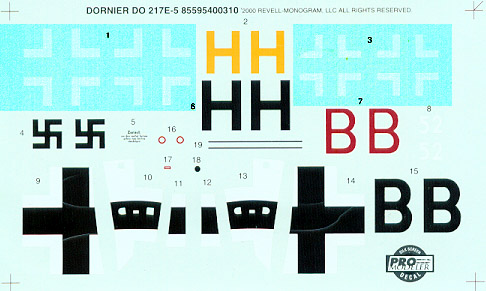
After handling all this nicely detailed pieces and looking over that extensive instruction booklet the decals are something of a letdown. I have adjusted the contrast in the picture to the right to show the white crosses more clearly. While the decals provided do cover the basic markings of two aircraft, have good print registry and color density, they really don’t give us anything in the line of service stencils and most of us are aware of just how compulsive the Luftwaffe was about marking everything. In fact, see those decals marked #16 through #19? Those aren’t even for the aircraft; they are for the Henschel missile. I’m afraid that there is not much choice; aftermarket decals are going to be needed to supplement this meager offering.
Conclusions
This is a nice kit overall and of a fairly important aircraft in the historical sense. The parts are well detailed, most of the panel lines are accurate, propellers are very close to complete accuracy, close enough not to worry about, general parts fit is very good with few exceptions as noted earlier. While I am sure that it would build into a fine model as is I would like to see some Photo Etched pieces in the cockpit and replacement cooling fans on those engines. The decals leave much to be desired as well.
There is not that much out there on the aftermarket for this kit which is a little surprising considering just how long this has been available. FM Models does offer a detail package that addresses those cockpit issues I talked about earlier and so does Verlinden. The Verlinden set is pretty pricey but does include flap details, which look real nice. EZ Mask offers a mask set for the kit and Koster Aero Enterprises has a replacement decal sheet available. Aero Master and Eagle Strike have replacement decal sheets out there and Meteor Productions has some replacement resin wheels. Generally speaking I have to give this kit high marks in just about every category and recommend it for building and collecting.